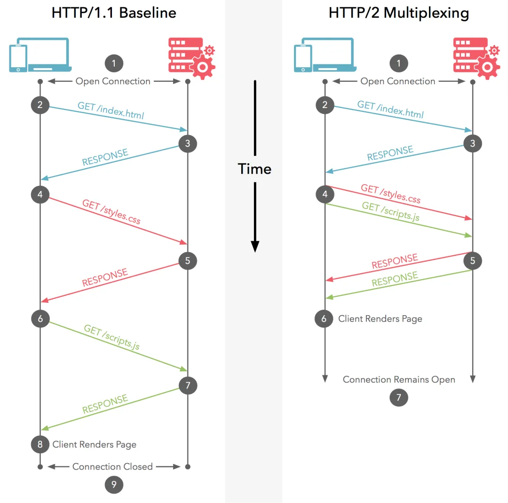

在业务飞速发展的过程中，用户体验是必不可少的一个环节，而页面性能是直接影响用户体验的重要因素。当页面加载时间过长、交互操作不流畅时，意味着业务可能会出现转化率降低、用户流失等业务问题。在过去一年，为了确保用户在使用快手商业化产品时能获得流畅、快捷和满意的体验，快手商业化大前端团队立项「商业化端架构性能治理专项」，针对 12 个核心项目累计 30+ 核心页面进行性能优化治理。
一. 背景介绍
1.1 页面性能优化的价值与意义
在业务迅猛发展的时代，用户体验已成为企业成功的关键因素之一，而页面性能则是塑造用户体验的核心要素。早在十多年前，亚马逊就已经意识到页面加载速度对商业成果的深远影响：亚马逊支付页面每增加 100 毫秒的延迟，可能减少 1% 有效转化。页面加载时间的延长和交互操作的不流畅性，不仅会损害用户体验，还可能导致转化率下降和用户流失等后果。
在快手商业化团队，我们深知页面性能对提升用户体验的重要性。因此，我们基于快手内部动态化技术的特点，并参考了 Google 的性能标准，制定了快手商业化页面性能达标的北极星指标（如下）
1.2 核心页面性能现状
在实际的商业化业务场景中，尽管端侧页面繁多，但流量却高度集中于少数核心系统与页面之上。因此，从 ROI 的角度出发，我们采取了页面分级治理策略，将优化资源聚焦于核心页面 。我们界定核心页面依据两大关键要素：一是它们直接面向外部用户，位于广告投放的核心路径之中；二是依据页面访问量（PV 数）的统计结果。
遵循这些原则，我们挑选出了 12 个流量较大且处于广告投放核心路径的快手商业化核心系统，涵盖了广告投放、广告落地页等核心业务流程，并进一步从中筛选出超过 30+ 核心页面作为优化的重点对象。那么，这些承载着巨大流量的核心页面，其性能表现究竟如何呢？
我们借助雷达平台（快手内部的性能监控平台），对各核心页面的性能数据进行了全面且细致的整理与分析，包括静态资源、接口等维度，并得出以下结论：
- 仅有 18.42%的页面即 7 个页面达到了“性能优秀”的基线标准，且其中有 4 个页面只是略优于基线标准。有 15 个页面其性能被判定为“较差”。
- 在 C 端系统中，主要性能瓶颈在于静态资源加载耗时过长，约 47.36%页面静态资源耗时超过 1500ms，约 65.78%页面的静态资源耗时超过 1000ms。这意味着用户在访问这些页面时，需要等待较长时间来加载页面内容，这无疑会严重影响用户体验。
- 而在 B 端系统中，主要性能瓶颈在于接口耗时过长，约 31.57%页面的接口请求耗时超过 2500ms，约 21.05%页面的请求接口耗时占比超过 60%。这对于 B 端系统的操作效率构成了严峻挑战，也直接影响了广告投放等核心业务流程的顺畅进行。
1.3 核心性能问题分析
基于上述性能现状的深入分析，我们明确了当前面临的核心性能问题主要归为两大类：一是静态资源加载和渲染耗时过长，二是接口请求耗时较长。针对这两大类核心性能问题，我们需要进一步细化问题原因，制定针对性的优化策略，并付诸实施。
1.3.1 静态资源加载和渲染耗时过长
为了进一步下钻分析「静态资源」相关的性能问题，我们通过破晓平台（快手内部的性能诊断平台）对上述各核心页面进行性能评测，发现这些核心项目普遍存在较多显而易见的问题。我们对这些问题进行了归类，主要有以下 4 个方面：
- HTTP/2 覆盖率较低： 所有项目均存在使用 HTTP/1.1 的情况，作为对比，HTTP/2 能显著提高页面加载性能、减少延迟、提高带宽利用效率等；
- 图片资源优化空间大： 绝大部分项目直接引用原始图片的 CDN 链接，没有对图片做任何处理；
- 页面渲染结构较复杂： 以广告投放平台为首的核心业务的页面首屏渲染结构非常复杂；
- 脚本资源较大： 脚本资源请求体积较大，JS 覆盖率较低，脚本解析时长占高，影响资源加载时长和渲染时长
1.3.2 接口请求耗时较长
众所周知，B 端系统往往逻辑非常复杂，尤其是像商业化的广告投放平台这样逻辑复杂且规模庞大的系统，涉及的接口数量众多，管理起来极具挑战性。为此我们对核心页面加载链路上的相关接口进行了细致的梳理和分析。在梳理过程中，我们重点关注了 4 个 B 端系统中的 14 个核心页面，这些页面是用户访问频率高、业务逻辑复杂的关键区域。通过监测和分析，我们发现这些页面中累计存在 30 个接口性能表现不佳。
二. 面临的挑战
在深入了解快手商业化内部性能现状及问题的基础上，我们意识到在推进性能治理的过程中，仍需克服以下三方面的挑战：
挑战一：统一推进各核心系统治理的难度较高
性能优化治理是一项复杂且长期的工作，尤其是在页面较多、项目发展阶段不一、技术栈差异化的情况下。商业化端侧性能治理专项涉及 12 个项目 30+页面，涉及页面流量大，且项目间发展阶段不同，导致性能问题的根源也各不相同，统一推进治理的难度较高，若任由业务方自行优化则重复劳动较多，同时难以形成可复制、可推广的最佳实践。为了解决这一问题，我们需要建立一套性能治理机制，既要针对性地解决端侧性能问题，也要在项目推进中引入性能优化卡口，防止性能问题后期劣化。
挑战二：B 端业务核心链路体验度量模型缺失
快手商业化的 B 端业务主要集中在广告投放、企业服务、内容变现、电商合作等领域，主要服务于广告主、代理商、品牌等，帮助他们在平台上实现品牌曝光、用户转化和销售增长。B 端业务交互逻辑重，用户停留时间长，操作次数多，除了关注页面加载阶段的性能以外，还需要关注业务核心链路的操作体验。目前，快手商业化缺乏 B 端体验度量模型，难以评估广告投放系统的用户体验。因此，我们亟需建立 B 端业务核心链路体验度量模型，以评估用户使用商业化 B 端核心系统的流畅度，并基于数据洞察问题，不断改进 B 端核心系统的用户体验。
挑战三：C 端业务 Web 和 Native 结合不够深入
在现代的互联网应用中，Web 端和 Native 端的界限日益模糊。用户的使用场景不再局限于某一特定平台，而 Web 与 Native 端的紧密结合可以有效提升产品开发效率、用户体验和资源共享度。由于早期业务开发周期紧急、动态化技术栈熟悉度不足等原因，商业化端内项目采用 Web 技术栈的比例较高，与 Native 侧结合不够深入。这导致了一些页面未能充分利用端上优化手段，如离线包、预建连、预请求等。为了应对多变的业务环境和技术挑战，我们需要借助「大前端」的组织优势，打破技术壁垒，搭建统一、高效且灵活的大前端技术体系。
三. 治理思路与落地实践
基于上述的背景现状分析，我们进一步制定了治理思路，核心能力包括以下三个方面：
性能评估模型和防劣化机制：
建立系统化的性能评估模型，评估性能健康度，发掘并解决端侧在性能维度的潜在问题，提升用户体验；同时，建立性能防劣化机制，使性能问题能够有效的收敛在产品上线发布前
B 端核心链路体验度量模型：
建立以「操作卡顿率」和「任务达成率」为核心指标的 B 端链路体验度量模型，从而评估用户使用商业化 B 端系统的流畅度，并基于数据洞察问题，不断改进商业化 B 端系统的平台体验
C 端 Web 和 Native 紧密结合： 搭建端内页面的技术选型标准，推动端内项目接入已有的端上能力&进行动态化改造，同时，持续探索 Web&Native 紧密结合的可能性，进一步输出体系化的方案，从而提升端内动态化页面的流量占比
下面我们进一步拆解上述三大核心建设方向下的关键技术实现方案：
3.1 性能评估模型和防劣化机制
为了系统化地提升和维护页面性能，我们构建了一套「事前-事中-事后」的性能评估模型和防劣化机制。
（1）事前-数据置信
问题： 在快手内部，性能上报依赖主动打点，难以保证数据准确性，易发生数据打点时机和用户体感差距较大的可能性；
解法： 落地数据置信方案计算 FMP 误差率（Web 页面对比浏览器内核计算的 LCP，动态化页面对比动态化内核计算的 FMP），对于差值 > 20%的页面进行上报点位校准
（2）事中-推进治理
问题： 性能优化治理涉及页面较多，且项目间发展阶段不同，影响性能背后的问题差异较大，统一推进治理难度较高，但如果放任业务方各自优化则重复工作较多，探索最佳实践的难度较大；
解法： 利用破晓平台（快手内部的性能评测平台）对页面进行性能评测，得出当前核心页面存在的核心问题；以评测结果为指引，针对性地梳理出 8 项核心优化策略和治理最佳实践，并推进各核心页面治理；
（3）事后-防劣化
问题： 随着项目持续迭代，存在性能持续劣化的可能性，难以毕其功于一役；
解法： 基于「事中-推进治理」的各项策略，定义明确可度量的准出规则，推进在治理完成后加入性能卡口，防止性能劣化；
3.1.1 事前-数据置信
快手内部目前性能上报依赖主动打点，这种方式虽有较好的灵活性，但一线开发同学较难感知上报时机是否准确，且随着业务的迭代，难以保证上报逻辑是否会被更改。因此，需要针对 FMP/T3 上报点位进行数据置信。
如上图所示，FMP/T3 数据置信过程主要包括三个核心步骤：
- 首先，根据页面类型选择基准值，Web 页面采用 Google 提出的 LCP 作为基准，而动态化页面则使用动态化内核自动计算的 FMP 作为基准；
- 其次，通过录屏方式记录页面加载过程中的关键性能指标，并截取关键帧以便一线开发团队了解上报 FMP 时的页面状态；
- 最后，结合关键帧图片识别对比基准值与上报点的误差比例来计算 FMP 误差率，对于误差率超过 20%的页面，会提出检查上报时机的建议。这一 20%的阈值是基于快手内部 2023 年对核心前端项目的校验结果得出。
如上图所示是当前 FMP 置信能力的效果图，FMP 置信能力的实现仅是起点，更重要的是产品化能力的落地。如下方的时序图所示，我们在破晓平台（快手内部的性能评测平台）实现 FMP 置信的产品化能力：
- 依托 openAPI 与雷达平台（快手内部的性能监控平台）无缝对接，预获取项目信息、高流量页面 URL 等，同时开放业务方手动录入；
- 为确保登录便捷，实现自动登录服务，兼容快手内网 SSO、快手 Web 及 App 等多种登录方式；
- 通过定时巡检机制，每日收集页面性能数据，定期向部门、项目组或单项业务进行推送数据，提升各角色对重点项目置信现状的洞察力。
3.1.2 事中-推进治理
如下图所示，我们以破晓平台的评测结果为指引，针对性地梳理出 8 项核心优化策略和治理最佳实践。在此，我们选取在静态资源、网络请求等维度下具有代表性的治理策略展开讲述。
（1）静态资源优化：图片资源、脚本打包优化等
图片资源优化：
图片资源的优化成为提升网站性能的关键一环，我们采用兼容性较好的 WebP 格式。与传统的 JPG 和 PNG 格式相比，WebP 通常能提供更小的文件体积，从而加快网页加载速度并节省带宽。同时，快手的 CDN 服务支持自动将 PNG、JPG 等格式的图片资源转换为 WebP 格式。以下面的图片为例，将 PNG 图片转换为 WebP 可以减少 80+%的体积：
同时，我们还针对性地提供了一个功能全面的图片处理库，支持以下特性：
- 支持 JPG、PNG、WebP、GIF 等多种图片格式的转换，具备图片裁剪、缩放、模糊、背景色设置等功能
- 能处理域名收敛问题，支持特定 CDN 域名和全局 CDN 域名的传入
- 能根据端内网络环境智能加载不同质量的图片，并根据设备像素比自动调整图片裁剪尺寸，确保图片资源的高效利用和优质显示
尽管 WebP 已经表现出色，但随着技术的不断进步，更高效的图片格式如 HEIF 和 AVIF 相继出现。HEIF 使用 HEVC 的帧内编码技术，具有 HEVC 帧内编码工具集，达到了更高的压缩率、更好的画质。AVIF 则是基于 AV1 视频编解码器的图片格式，在高压缩比和较高的视觉质量方面比 WebP 和 HEIF 更优。然而，这些新格式在兼容性方面仍存在挑战，尤其是与老旧设备和浏览器的兼容性问题，限制了它们的广泛应用。目前，快手 APP 已经支持 HEIF 格式，端内的图片库也增加了相关参数以支持这一格式。此外，快手还自主研发了 KVIF 格式，比 AVIF 和 HEIF 更优。
脚本资源打包优化：
快手商业化前端针对前期各自独立的研发工具和方案带来的维护成本高、低效协作等问题，在 23 年进行了前端工程方案的整合升级，统一将数百个前端工程迁移至 Kmi（快手商业化的前端工程化解决方案）。从工程角度来看，统一迁移 Kmi 不仅提升开发效率和降低维护成本，同时还保证了灵活性和可扩展性，为性能优化提供了便利的先发优势。Kmi 提供了三种 Code Splitting 策略，以适应不同的项目需求：
bigVendors：将 async chunk 里的 node_modules 的文件打包到一起，避免重复，但容易导致单文件尺寸过大，无缓存效率可言；
depPerChunk：和 bigVendors 类似，将依赖按 package name + version 进行拆分，解决 bigVendors 的尺寸和缓存效率问题，但请求较多；
granularChunks：在 bigVendors 和 depPerChunk 之间取了中间值，同时又能在缓存效率上有更好的利用。
在默认使用 granularChunks 策略的基础上，Kmi 针对各核心项目定制化打包优化，以最大化提升商业化前端应用的性能和用户体验。此外，Kmi 在每次构建后自动生成详细报告，帮助团队深入了解每次构建过程中的关键差异，为代码质量和构建速度的持续优化提供数据支持，也为排查问题提供了快速还原现场的能力。
（2）网络请求优化：HTTP/2+域名收敛、数据预请求等
升级 HTTP/2+域名收敛
为了提升性能，我们针对仍在使用 HTTP/1.1 的商业核心项目域名（包括业务域名、CDN 域名、埋点域名等）进行了 HTTP/2 升级。HTTP/2 的多路复用特性允许在同一 TCP 连接上并行交换多重请求-响应消息，从而克服了 HTTP/1.1 中同一域名下请求数量受限的问题。
在升级 HTTP/2 的同时，我们还建议业务收敛域名，将资源集中到更少的域名下，以减少 TCP 连接数和优化 DNS 查询。此外，我们针对端内场景配置了预建连，提前建立与目标域名的 TCP 连接和 TLS 握手，进一步减少延迟，提升首次请求的响应速度。
数据预请求
如下图所示，常规页面流程可简化为「HTML/Bundle 加载解析 -> 页面资源加载解析 ->数据 API 请求 -> 页面渲染」4 个过程，数据预请求的核心思路是最大限度提前页面数据加载时机，提前获取当前或未来需要的数据，以便用户在访问时能够更快地体验到完整的内容。
我们的数据预请求方案结合 KMI 实现了发起预请求、消费预请求、日志上报和缓存机制等主要功能。通过工程配置，用户可以在解析时立即发起预请求并缓存结果，随后通过插件暴露的适配器对预请求结果进行消费。同时，我们在关键节点上报自定义事件，收集预请求 API 信息以完善日志能力。缓存机制避免重复请求同一数据，进一步加速了页面加载速度。
在推进接入过程中，为了适配各接入方的使用场景，我们在请求时机、底层请求库兼容、日志能力完善、业务定制化需求的问题中不断优化进行了 40+次的迭代，功能不断提升。目前该方案在 B 端各核心项目中发挥了较大的作用，单项目 FMP 平均减少 600ms+。上述方案主要针对 web 项目，端内项目则主要是使用客户端在端内提供的预请求方案，可见下方的【结合客户端能力】这一章节。
3.1.3 事后-防劣化
如上面的时序图所示，主要结合天穹平台（快手内部的前端代码审查平台）实现性能维度的天穹平台插件，在前端研发流程上建立性能防劣化机制，具备性能维度下的任务打标、流程阻断、豁免审批、结果触达等性能卡口能力。目前已为快手商业化端侧核心项目加入卡口，一期选取 5 项 web 指标、7 项动态化指标作为卡口规则，规则详见下表：
3.2 B 端核心链路体验度量模型
为了更好地监控 B 端系统的用户操作体验和流程完成情况，我们建设以【操作卡顿率】和【任务达成率】为核心指标的 B 端核心链路体验度量模型。其中操作卡顿率关注核心路径的操作响应体验，任务达成率则关注核心任务流程的完成情况。
3.2.1 操作卡顿率：核心路径的操作响应体验
操作卡顿率是衡量用户操作体验的核心指标，它反映了用户在执行操作时等待时间超出预设阈值的占比情况。该指标通过对比卡顿操作数与有效操作数来计算得出，直观展现了用户在不同使用场景下可能遭遇的延迟问题。其中，有效操作数记录了用户每次成功执行的操作，而卡顿操作数则统计因等待时间超出阈值而引发的卡顿事件。
在操作卡顿率的核心思路中，我们为核心链路上的主要操作设定了明确的响应阈值，一旦超出此阈值，即视为一次卡顿。针对 B 端用户多样化的操作场景，我们进一步细化了操作场景，并制定了相应的细分指标和阈值，以确保评估的准确性和针对性。
基于这些通用规则，我们为不同 B 端核心业务平台在不同场景下的操作卡顿设定了合理的阈值，并设计通用的卡顿率数据上报 SDK，以便业务轻松接入各自平台，降低接入成本。在快手商业化前端团队的 B 端体验度量模型中，操作卡顿率占据举足轻重的地位：
卡顿率能够客观、准确地反映用户体验的流畅度，不会跟产品形态强耦合，也不会因业务需求的迭代而产生大幅波动；
作为一个全局性的性能指标，卡顿率与前端和后端的优化工作紧密相连，后端接口的优化和前端页面的提升都能直接反映在卡顿率的改善上，这充分体现了技术优化的价值，并帮助团队清晰评估技术优化的成果，最终助力提升用户的交互体验。
3.2.2 任务达成率：核心任务流程的完成情况
任务达成率是衡量用户成功完成任务或达成目标的比例，其计算基于提交成功数（经过访问 ID 去重处理）与页面开始加载数的比值。这一指标深受前端静态资源可用性、后端接口服务稳定性以及用户个体差异等多重因素的影响。
以商业化广告投放平台的创编流程（即创建广告的过程）为例，用户在进行广告创建时，会经历一系列有序的步骤。具体包括：
- 页面到达成功率：衡量从用户开始访问页面到主 JS 执行完毕，再到页面加载完成的整个过程的成功率
- 提交转化率：关注用户在填写完广告属性后点击提交按钮的转化率
- 提交成功率：记录提交操作成功的情况，并通过访问 ID 进行细致区分，以确保统计的准确性
为了分析任务达成率的异常现象，我们还会收集一系列技术指标进行监控。当任务达成率的细分指标出现异常波动时，这些技术指标将作为关键的诊断工具，帮助我们定位问题的根源。具体的技术归因指标包括但不限于：
3.3 C 端 Web 和 Native 紧密结合
在移动端互联网时代无论是 H5 还是动态化页面，与客户端的紧密结合是性能优化的关键路径。这主要包括两个核心方面：一是充分利用和结合已有的客户端能力，以提升页面加载速度；二是实施端侧页面的动态化改造，利用动态化的优势进一步提升性能表现。
3.3.1 结合已有的客户端能力
针对 H5 页面，常见的优化手段包括预加载、预建连、离线包、code cache 等，而对于 KRN 页面，则采用包预置、业务包预加载、code cache、预请求等策略。
这些优化手段可能有着不同的名称，但其核心理念相通的。在快手内部，Yoda 和 KDS 两个端侧基础团队提供了性能优化 SOP。基于这些 SOP，我们梳理出一系列适合商业化的优化手段，并推动了核心端内页面的接入工作。实践证明，这些端侧的优化方案取得了显著的效果。在接入后，端内单项目的 FMP 时间平均减少 500ms+。
3.3.2 端侧页面动态化改造
对于 web 技术栈而言，由于浏览器底层架构设计、JS 的解析和执行效率等原因，在渲染性能和交互流畅度上很难突破浏览器限制。相较而言，采用类 RN 技术栈开发的页面由于核心渲染层 & 组件基于原生实现，整体性能体验能够提升一个台阶，且付出的开发效率/发版效率代价相对而言较小。
举个例子，快手商业化大前端团队以磁力建站落地页作为试点，完成动态化改造后的性能收益提升 35%以上，性能提升也带来了显著的业务 CVR 和预期消耗增长。因此，如下图所示，我们搭建了一套端内页面的技术选型标准，完善动态化技术基建，持续推动端内项目完成动态化改造。

值得一提的是，在探索 Web 和 Native 紧密结合过程中，我们也在思考一套渐进式增强方案。以商业化磁力金牛和粉条为例，这两个项目主要流量在端内，且有很强的 B 端属性，历史包袱较重。经过与业务同学共同评估，贸然地切换至动态化技术栈的成本较高。因此，我们希望能在保留原有 Web 开发模式的同时，进一步提供性能极佳的富交互组件来创建 Hybrid 应用，让这些 Web 应用具有媲美 Native 的用户体验。
如上图所示，以磁力金牛和粉条的多 Tab 场景为例，我们的思路是基于 Native 实现多 Tab 容器，用于承载复杂的多 Tab 页面结构。主要能力如下：
- 容器能力： 提供 RN、TK、webview 等渲染容器，并提供定制化的容器能力，如资源预加载、数据预请求、容器预热等方案
- 配置化能力： 支持自定义底部导航栏、底部 Tab、骨架屏等配置化能力
- 框架交互能力： 支持容器间数据共享&通信，可切换 tab，控制元素展现等
四. 阶段性成果
经过一系列的努力与优化，我们取得了显著的阶段性成果：
北极星达标情况：性能优秀达标率提升 61.63%，性能良好达标率提升 41.95%，这充分表明我们的性能优化策略正在逐步显现成效。
B/C 端 FMP 月均值整体呈逐月下降趋势，核心页面的整体性能（P90 分位）提升 43.23%
B 端业务：B 端核心页面整体性能提升 45.74%，核心广告投放平台的卡顿率指标均降低至 20%以下
C 端业务：C 端核心页面整体性能提升 42.12%，C 端核心页面的触达率提升 10.16pp，C 端核心页面的秒开率提升 31.62pp
综上所述，无论是从北极星指标的提升，还是从 B/C 端 FMP 月均值的下降，再到 B 端卡顿率和 C 端触达率&秒开率等指标的提升，都充分证明了我们的努力是值得的。
五.总结与展望
本篇文章主要基于大前端视角，解决不同领域场景下的页面性能问题。展望未来，我们将继续把性能体验作为重点关注领域，打造标准化、平台化的性能优化领域体系建设，推动商业化大前端页面性能水平达到业界领先，以确保商业化用户在使用我们的产品时获得流畅、快捷和满意的体验，从而推动业务的持续增长和发展。